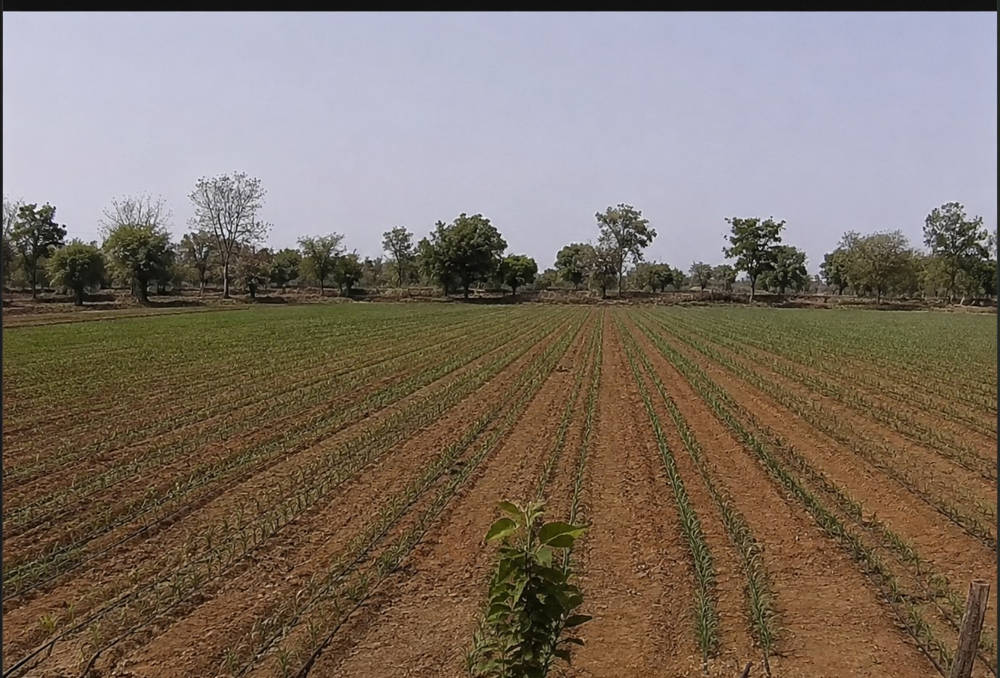
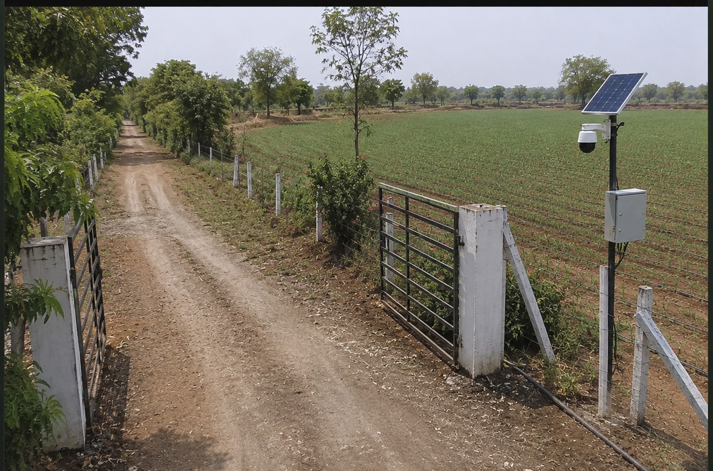

3 Plots
21,780 sq ft · ~0.5 acre
Crop
Gehu (Wheat)
Status
Upcoming 🌾
Farm Camera — Main Field
Demo Camera


You don’t have to take our word for it.
0
Plots already reserved this season
₹0
Contributed so far
Families fed
From our soil to your plate.